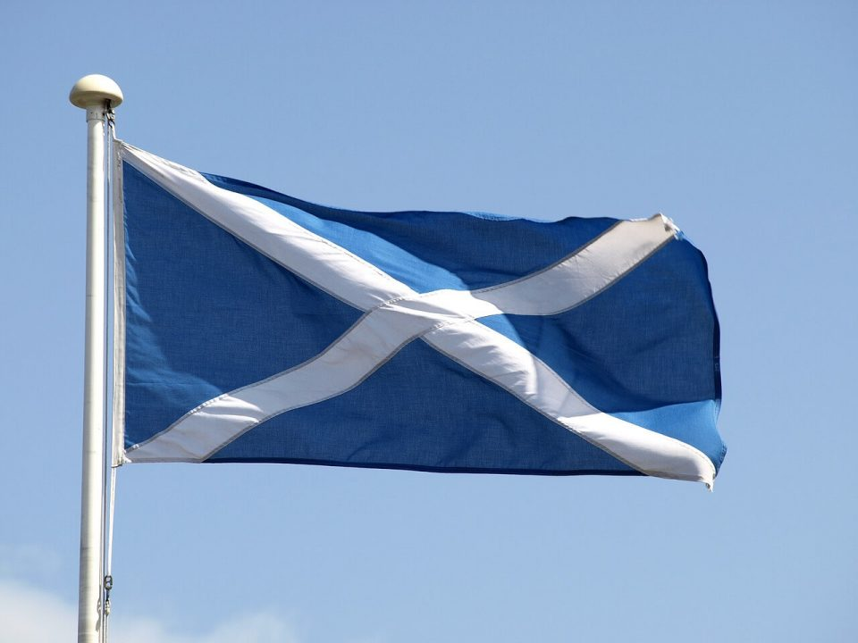

Scotbowl
What is ScotBowl?
Quizzers from Universities all around the country come to Edinburgh to face off in an academic quizzing tournament. The tournament works a lot like BBC's University Challenge - teams of up to four players face-off in a series of 10 one-on-one matches against other teams; competing to answer individual questions on the buzzer as well as bonus questions which are answered as a team. Furthermore, like University Challenge, questions are largely about academic subjects (focusing mainly on the sciences and humanities), though there are a good number of pop culture questions thrown into the mix for good measure. ScotBowl is one of the highlights of our year as a society as it is a great opportunity for like minded quizzers to get to know each other and form friendly rivalries.
Quizzers from Universities all around the country come to Edinburgh to face off in an academic quizzing tournament. The tournament works a lot like BBC's University Challenge - teams of up to four players face-off in a series of 10 one-on-one matches against other teams; competing to answer individual questions on the buzzer as well as bonus questions which are answered as a team. Furthermore, like University Challenge, questions are largely about academic subjects (focusing mainly on the sciences and humanities), though there are a good number of pop culture questions thrown into the mix for good measure. ScotBowl is one of the highlights of our year as a society as it is a great opportunity for like minded quizzers to get to know each other and form friendly rivalries.
ScotBowl 2017
During Scotbowl 2018 we saw over 15 teams compete over the day in several tense rounds. The competition was fierce with many teams running for first place however "Great Dismal Swamp" clinching the victory during the final rounds; closely followed by "Hydraulic Jacking" and then "Warwick A". We are hoping to expand and improve this event for next year's competition and hope to see many of you there!

During Scotbowl 2018 we saw over 15 teams compete over the day in several tense rounds. The competition was fierce with many teams running for first place however "Great Dismal Swamp" clinching the victory during the final rounds; closely followed by "Hydraulic Jacking" and then "Warwick A". We are hoping to expand and improve this event for next year's competition and hope to see many of you there!